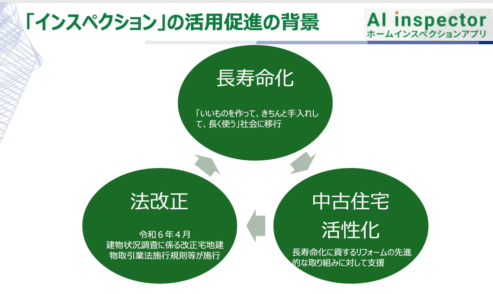
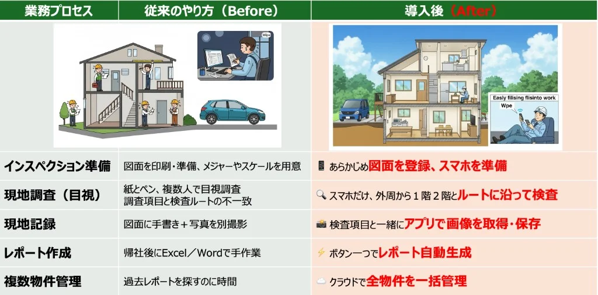
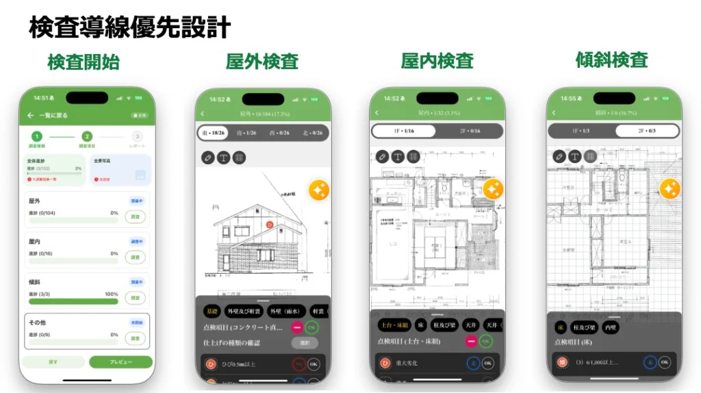
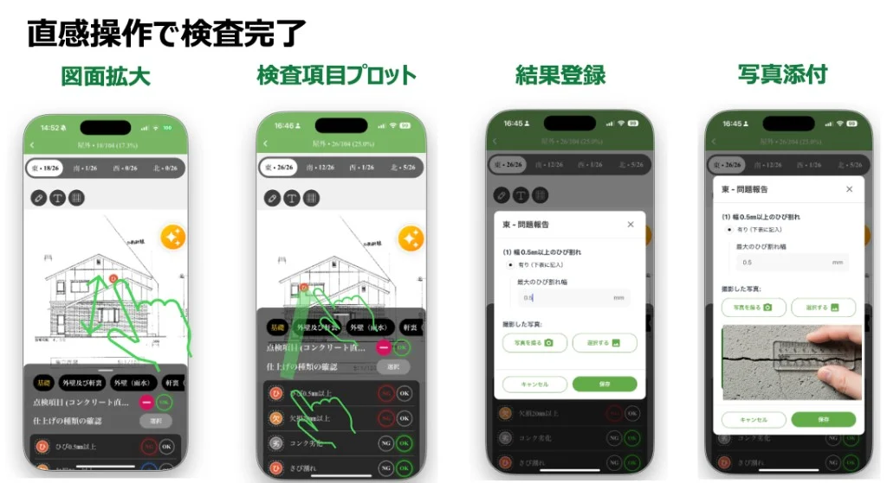
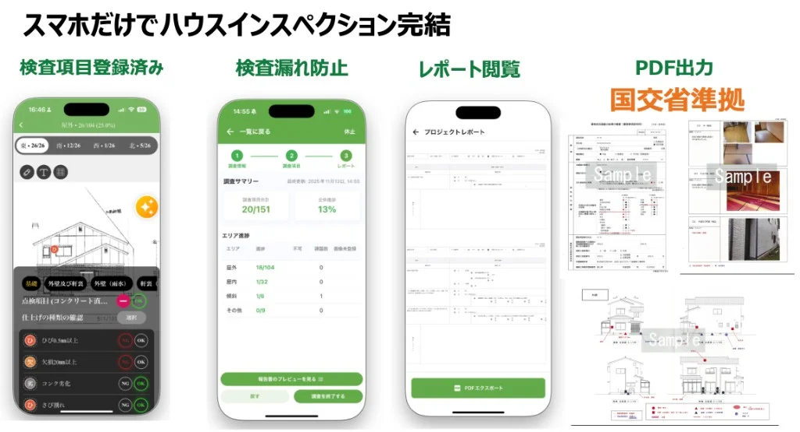

現場で起きている具体的な課題
- ✓ 建物診断に専門知識が必要で、検査員の確保が困難
- ✓ 人的ミスによる検査漏れや見落としが発生しやすい
- ✓ ホームインスペクションに時間がかかり、顧客対応が遅れる
- ✓ 検査結果の記録が紙ベースで、データ活用ができない
「インスペクション」の活用促進の背景

建物の長寿命化、令和6年4月の法改正（建物状況調査に係る改正宅地建物取引業法施行規則等）、中古住宅活性化の3つの要素が相互に連携し、ホームインスペクションの重要性が高まっています。AI Inspectorは、この社会的ニーズに応えるソリューションです。
製品概要とアプローチ
AI Inspectorは、ハウスインスペクション・住宅点検業務の合理化のためのアプリです。 音声入力やAIアシスタントで検査手順をガイドし、対象はゼネコンではなく中古住宅の診断やマンション・戸建の定期点検向け。スキャンは不要で、点群やデジタルツインではなく、現状の定期検査・ハウスインスペクションのやり方をそのまま効率化します。 国交省準拠レポートの自動生成はもちろん、貴社独自フォーマットのレポート作成も可能。レポート作成業務を削減し、検査員は現場と顧客対応に集中できます。
業務プロセスの変革

❌ 導入前
- 検査時間：1件あたり2〜3時間
- 検査精度：人的判断に依存
- 見落とし率：20〜30%
- 検査員：専門知識が必要
- データ管理：紙ベース
- ホームインスペクション：時間がかかる
✅ 導入後
- 検査時間：1件あたり30分〜1時間
- 検査精度：AIによる高精度判定
- 見落とし率：5%以下
- 検査員：AIサポートで誰でも可能
- データ管理：デジタル化・クラウド保存
- ホームインスペクション：迅速化・効率化
検査導線優先設計

検査開始から屋外検査、屋内検査、傾斜検査まで、最適な検査ルートに沿って効率的に検査を進められます。検査漏れを防ぎ、時間を大幅に短縮します。
直感操作で検査完了

スマートフォンで図面を拡大し、検査項目をプロット、結果を登録、写真を添付するだけで検査が完了します。複雑な操作は不要で、誰でも簡単にホームインスペクションを実施できます。
スマホだけでハウスインスペクション完結

検査項目の登録から検査漏れ防止、レポート閲覧、国交省準拠のPDF出力まで、スマートフォンだけで完結します。現場からそのまま報告書を生成でき、業務効率が大幅に向上します。
差別化ポイント
音声入力・AIアシスタントで検査手順を合理化
検査中の音声入力やAIアシスタントで手順をガイド。ハウスインスペクション・住宅の定期点検業務を効率化し、現場での記録負荷を軽減。検査漏れを防ぎながら、スムーズに検査を進められます。
ハウスインスペクション・住宅点検に特化
対象はゼネコンではなく、中古住宅の診断やマンション・戸建の定期点検向け。検査導線に沿った操作で見落としを防止。現状の定期検査やハウスインスペクション業務の合理化に最適です。

スマホだけで検査完結（スキャン不要）
スキャンは不要。現場で写真・音声で記録し、検査項目に沿って入力するだけ。点群やデジタルツインではなく、今ある定期検査・ハウスインスペクションのやり方をそのまま合理化します。
レポート作成業務はもういらない
国交省準拠レポートの自動生成はもちろん、貴社独自フォーマットのレポート作成も可能。検査結果から報告書を自動作成するため、レポート作成業務を削減し、顧客対応や次の現場に集中できます。
導入効果（定量的な成果）
応用例・想定利用シーン
-
ホームインスペクション業務
中古物件購入時の建物診断を、音声入力・AIアシスタントで効率化。検査手順に沿って進めるだけで、見落としを防ぎながらスピードアップ。国交省準拠または貴社独自のレポートを自動作成し、レポート作成業務を削減。顧客への提出もスムーズです。 -
住宅・マンションの定期点検
マンションや戸建の定期点検業務を合理化。スキャンは不要で、スマホと検査導線に沿った入力だけで完結。音声入力で手が塞がった状態でも記録でき、現状の定期検査のやり方を変えずに効率化できます。 -
検査員の負荷軽減・品質のばらつき防止
検査手順のガイドとAIアシスタントで、経験の差による品質のばらつきを抑制。レポート作成業務が不要になるため、検査員は現場と顧客対応に集中でき、処理件数や満足度の向上につながります。 -
保険査定・不動産診断の報告書作成
保険会社の建物査定や不動産診断において、国交省準拠または貴社指定フォーマットでレポートを自動作成。手作業での報告書作成から解放され、査定・診断業務そのものにリソースを振り向けられます。
お問い合わせ・資料請求
AI Inspectorで建物診断を効率化しませんか？
まずは無料でお試しください。
お問い合わせフォーム
お急ぎの場合は、直接お電話またはメールでお問い合わせください
株式会社One Technology Japan
TEL: 03-5324-2652（代表）
MAIL: contact@onetech.jp